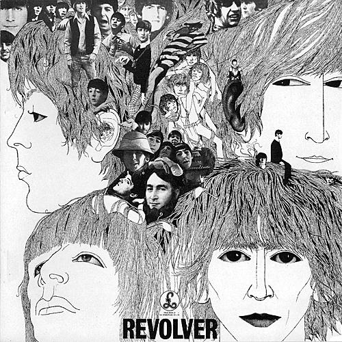
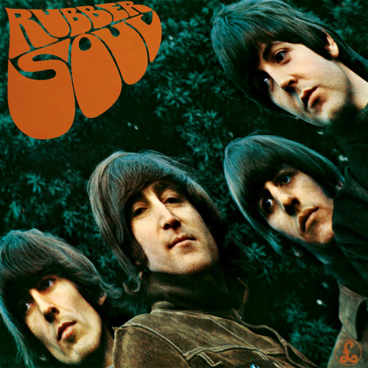
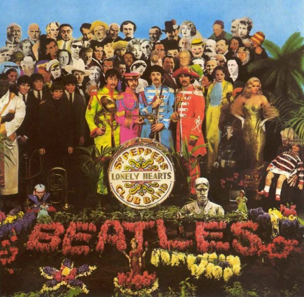

A hard day night destila uma lista infindável de clássicos.
Beatles for sale mostra o cansaço e cinismo da banda a tudo ao seu redor, começando pelo título de humor autocrítico: “Beatles à venda”.
Help é a trilha sonora do segundo filme dos Beatles é um álbum muito bom e traz alguns dos maiores clássicos e das canções mais famosas da banda.

Em Revolver, a escalada de qualidade dos Beatles ainda não tinha chegado no ponto mais alto, mas dá outro grande passo em Revolver.

Rubber Soul exibe sofisticação e qualidade desde a bela capa (com efeito alongado) até o desfile de grandes canções e clássicos.

1967 é obra mais importante dos Beatles. É o álbum mais significativo da história do rock e um dos discos mais importantes da música moderna.
Beatles with Beatles, o segundo disco da banda é um dos melhores de seu catálogo.
Love. São as grandes canções mexidas na mesa de mixagem, adicionando instrumentos ou tirando-os, combinando trechos de faixas diferentes e coisas do tipo.